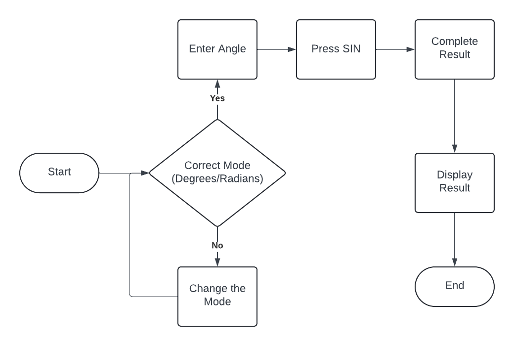

The user interface of the TI-30X IIS calculator is designed for functionality and ease of use, suitable for both educational and professional environments. Below is a detailed breakdown of its interface features:
Understanding how to operate the TI-30X IIS calculator is essential for efficient use. Below is a detailed user operation flowchart that guides you through the basic functions from turning on the calculator to performing calculations and viewing results.
The mode display on the TI-30X IIS facilitates the switching between various calculator functions tailored to different calculations, such as statistical, scientific, and engineering modes. Users can easily cycle through modes by pressing the 'MODE' key, which toggles the calculator through its various settings.